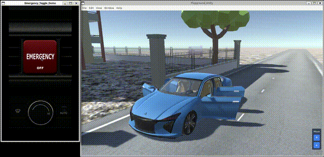

Part2 Practice
6. Controlling the Simulator Vehicle 📱
6-1. Introduction
In the previous chapter, we looked at sample code that demonstrates how to use the Yoriito Signal API. In this chapter, we introduce a sample application that makes practical use of the Yoriito Signal API.
6-2. Understand the App Architecture
The overall architecture of the sample application is shown in the figure below.

GUI Application (Flutter)
- This is the front‑end (screen) operated by the user, implemented with Flutter.
- In this sample, the GUI Application and the Headless Application are separated into different processes so that the UI framework can be replaced more easily.
- However, when using the API, neither Flutter nor this process separation is mandatory.
- This architecture is presented simply as one example of how to develop a GUI Application using the Yoriito Signal API.
- Target code:
yoriito-tutorial/ref_ui
Headless Application (C++)
- This is the back-end (non-GUI) application that acts as a BFF (Backend For Frontend), processing requests from the GUI Application.
- It calls the Yoriito Signal API and communicates with the GUI Application via gRPC.
- It is implemented in C++.
- Target code:
yoriito-tutorial/ref_app
Yoriito Signal API
- This is the vehicle‑oriented API used from the Headless Application.
- The API is provided as shared libraries named
libyoriito_api_***.so.
Yoriito VISS Server
- As a data broker, it relays vehicle signal information from PAL to applications, and forwards actuator control requests from applications to PAL.
PAL
- This is the lowest layer, directly interfacing with the platform-dependent I/O and the physical vehicle.
- In this tutorial, the 3D car model plays this role.
- Target code:
yoriito-tutorial/ref_pal
6-3. Understand the App Contents
The sample application features an emergency button. When you press the emergency button in the app, windows and doors close, and lights turn on.

6-4. Verify the App Behavior
-
Start the simulator (PAL)
-
Move to the
ref_paldirectory.$ cd /work/ref_pal -
Run the following commands (note that
./init_pal.shtakes about 3–5 minutes).$ npm install $ ./init_pal.sh $ npx electron . --no-sandbox
-
-
Start the Headless Application
-
Move to the
ref_appdirectory.$ cd /work/ref_app -
Build the application.
$ cmake -S . -B build $ cmake --build build -j -
Run the application.
$ ./build/ref_app
-
-
Start the GUI Application
-
Move to the
ref_uidirectory.$ cd /work/ref_ui -
Build and run.
$ flutter clean $ flutter pub get $ flutter run -d linux
-
6-5. Troubleshooting
6-5-1. "Address already in use" error appears at startup
-
Cause
- The gRPC port numbers used by the Yoriito VISS Server or the Headless Application may conflict with those of other applications.
- This is likely to occur if multiple samples or stale processes are still running in the same environment.
-
Countermeasure
-
Check which port numbers are used in this tutorial and make sure there are no other processes using the same ports.
Port Component 50052 Yoriito VISS Server (consumer) 50053 Yoriito VISS Server (producer) 50055 Headless Application
-